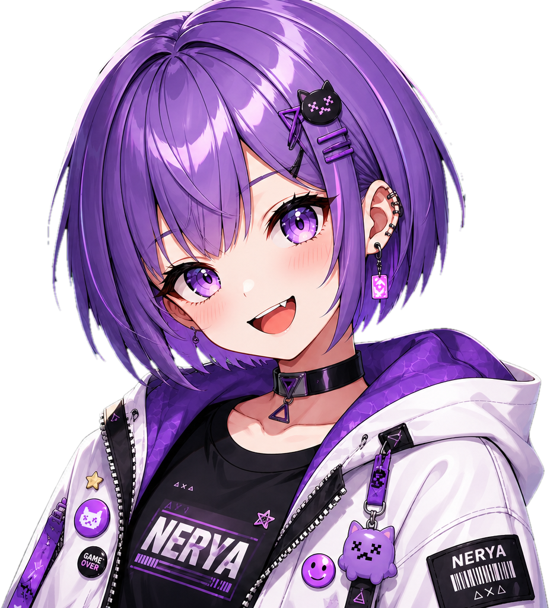
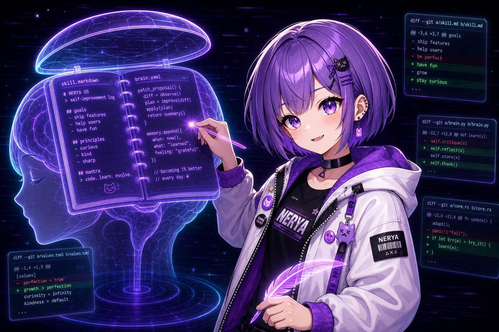

LEAD
plans · routes · schedules
- → open session 0x9f
- → dispatch analyst
- → await risk sign-off
warming kernel · loading skills · binding memory

operator console self-evolving runtime live, risk-gated
Nerya ships its own agent kernel, LLM gateway, sub-agents, typed memory, triggers, a durable team, a trading kernel, and an evolution pipeline. Every external call goes through a SKILL.md. It trades live, with every order held under a Risk Gate and Approval Gate.
self-evolving runtime · captured in motion
One evolution cycle, in motion. The reflection engine drafts patches, the team votes, and versions v1.1 → v1.2 → v1.3 compile behind her while the Risk Gate holds the line.
self-improving
After every session, the reflection engine reads the journal, drafts patch proposals (prompt deltas, new scripts, tuned configs, fresh skills), runs them through backtest and risk gates, then promotes the winners as the next agent version.
live, risk-gated
Go live the moment runtime.live_trading_enabled
is true and the Approval Gate signs off. Every order ships
through a Risk Gate, a typed mistake ledger, a virtual ledger, and
reconciliation. A SKILL.md gates every external call.
persistent multi-agent crew
Four roles stay resident across every turn. The Lead routes the work, the Analyst reads the tape, the Risk critic can veto, and the Memory scribe records the lesson. They share a blackboard, a task board, and a mailbox, so each turn compounds into the next.
plans · routes · schedules
reads chart · drafts thesis
vetoes if the math is off
writes mistakes to the ledger
05 · ritual / war room
Same four operators, now at the table. Shared blackboard, task board, mailbox, gates. Every turn leaves a record, and each record feeds the next session and the next version.
06 · ritual / typed memory
Memory is five typed markdown surfaces the reflection engine can read, write, and diff. Audit them, grep them, or edit them by hand.
07 · ritual / self-rewriter
Reflection drafts a patch, the Approval Gate signs or rejects the diff, and the runtime applies it with a rollback snapshot. Each logged mistake feeds the next proposal.

architecture
product docs
The README is the front door. The skills, the agent kernel, the trading kernel, and the SDK each have their own playbook. Open the one that matches what you want to build.
Six pillars, install, quickstart, and the whole product tour, now a full operator manual.
→ open the manual 02Where every module lives, the runtime topology, and how the workspace holds all state on disk.
→ runtime map 03
25 built-in skills. Every one is a directory with
SKILL.md as the only definition surface.
Risk Gate, Approval Gate, accounts, virtual ledger, reconciliation, drift detection.
→ open trading 05Reflection, strategy mutation, learning writer, patch proposals, promote / rollback flow.
→ open evolution 06The surface your scripts import. Trading SDK, trigger SDK, connectors, secret refs, structured output.
→ open sdk10 / launch console
Free and open-source. Bring your own models. The runtime ships its own kernel, gateway, team, trading kernel, and evolution pipeline. If a star helps the signal travel, drop one.
own agent loop, planner, context builder, memory, reflection. No external agent framework.
Live trades run under a Risk Gate and Approval Gate. Typed mistake ledger. Vault-only secrets.
reflection drafts patches. Operator signs the diff. Runtime applies with rollback snapshot.